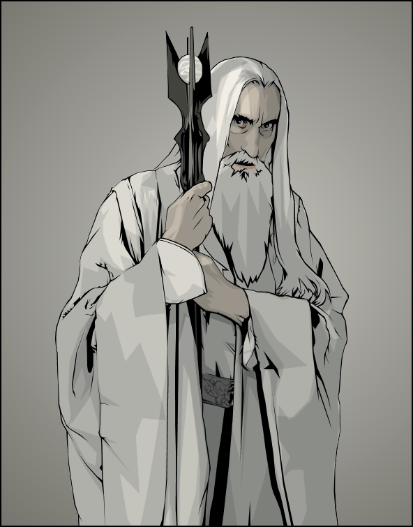

Saruman The White
Saruman is one of several characters in the book illustrating the corruption of power; his desire for knowledge and order leads to his fall, and he rejects the chance of redemption when it is offered. The name Saruman [ˈsaruman] means "man of skill" in the Mercian dialect of Anglo-Saxon;[1] he serves as an example of technology and modernity being overthrown by forces more in tune with nature. Saruman is represented by a white hand.